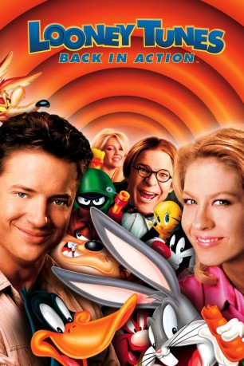

#1353 Looney Tunes: Back in Action
 
 IMDB-Wertung: 5.7 / 10
IMDB-Wertung: 5.7 / 10  Metascore: 64
Metascore: 64 
Huch! Das Schicksal der Menschheit liegt in den Händen von Bugs Bunny & Daffy Duck. Auf einer atemlosen Jagd von Los Angeles über Las Vegas und Paris nach Afrika folgen die beidne Cartoon-Helden der Spur des geheimnisumwitterten Diamanten "Blue Monkey", den der heimtückische Mr. Chairman der ACME Organisation einsetzen will, um die Weltherrschaft an sich zu reißen. Der wohl berühmteste Hase und die nicht weniger berühmte Ente richten gemeinsam urkomisches Chaos in dem rasanten Familienabenteuer an, das auf fantastische Weise Realfilm und Zeichentrick vereint. Erlebt Bugs, Daffy, Sylvester, Tweety und die anderen Looney Tunes in einer Komödie der Superlative.
Jahr: 2003
Dauer: 91 Minuten
FSK: 6
Land: Deutschland Studio: Warner Bros.Tonspuren: DD5.1 - , DTS - , DD2.0 - , DD2.0 - ,
Untertitel: , Englisch, Deutsch,
Auflösung: 1080p (1920x800) Größe: 7157 MB
Genre: Animation/Trick, Abenteuer, Komödie, Familie, Fantasy
Regisseur: Joe Dante
Drehbuch: Larry Doyle
Soundtrack: Jerry Goldsmith
Darsteller:
 Brendan Fraser als DJ Drake / Himself / Voice of Tasmanian Devil and She-Devil
Brendan Fraser als DJ Drake / Himself / Voice of Tasmanian Devil and She-Devil Jenna Elfman als Kate
Jenna Elfman als Kate Steve Martin als Mr. Chairman
Steve Martin als Mr. Chairman Timothy Dalton als Damien Drake
Timothy Dalton als Damien Drake Heather Locklear als Dusty Tails
Heather Locklear als Dusty Tails Joan Cusack als Mother
Joan Cusack als Mother Dick Miller als Security Guard
Dick Miller als Security Guard Roger Corman als Hollywood Director
Roger Corman als Hollywood Director Kevin McCarthy als Dr. Bennell
Kevin McCarthy als Dr. Bennell Jeff Gordon als Himself
Jeff Gordon als Himself Matthew Lillard als Himself
Matthew Lillard als Himself Mary Woronov als Acme VP, Bad Ideas
Mary Woronov als Acme VP, Bad Ideas Marc Lawrence als Acme VP, Stating the Obvious
Marc Lawrence als Acme VP, Stating the Obvious Bill McKinney als Acme VP, Nitpicking
Bill McKinney als Acme VP, Nitpicking George Murdock als Acme VP, Unfairly Promoted
George Murdock als Acme VP, Unfairly Promoted Robert Picardo als Acme VP, Rhetorical Questions
Robert Picardo als Acme VP, Rhetorical Questions Ron Perlman als Acme VP, Never Learning
Ron Perlman als Acme VP, Never Learning Vernon Wells als Acme VP, Child Labor
Vernon Wells als Acme VP, Child Labor Leo Rossi als Acme VP, Climbing to the Top
Leo Rossi als Acme VP, Climbing to the Top Archie Hahn als Stunt Director
Archie Hahn als Stunt Director Allan Graf als Interrogator
Allan Graf als Interrogator- Arturo Gil als Dancing Yosemite Sam
- Gabriel Pimentel als Dancing Yosemite Sam
 Martin Klebba als Dancing Yosemite Sam
Martin Klebba als Dancing Yosemite Sam Joe Alaskey als Bugs Bunny / Daffy Duck / Beaky Buzzard / Sylvester / Mama Bear
Joe Alaskey als Bugs Bunny / Daffy Duck / Beaky Buzzard / Sylvester / Mama Bear Jeff Bennett als Yosemite Sam / Foghorn Leghorn / Nasty Canasta
Jeff Bennett als Yosemite Sam / Foghorn Leghorn / Nasty Canasta Billy West als Elmer Fudd / Peter Lorre
Billy West als Elmer Fudd / Peter Lorre- Eric Goldberg als Tweety Bird / Marvin the Martian / Speedy Gonzalez
 June Foray als Granny
June Foray als Granny Bob Bergen als Porky Pig
Bob Bergen als Porky Pig Casey Kasem als Shaggy
Casey Kasem als Shaggy Frank Welker als Scooby-Doo
Frank Welker als Scooby-Doo- Danny Chambers als Cottontail Smith
- Stan Freberg als Baby Bear
 Will Ryan als Papa Bear
Will Ryan als Papa Bear Mel Blanc als Gremlin Car , archive footage
Mel Blanc als Gremlin Car , archive footage Tanee McCall als Dancer
Tanee McCall als Dancer- Becca Sweitzer als Dancer
- Micki Duran als Dancer
- Shanti Lowry als Dancer
 Brandon Henschel als Dancer
Brandon Henschel als Dancer- Erica Gudis als Dancer
 Peter Graves als Host of Civil Defense Film , uncredited
Peter Graves als Host of Civil Defense Film , uncredited- Glen Hambly als Laboratory Scientist , uncredited
- Michael Jordan als Himself , uncredited
- Nikki Martin als Wooden Nickel Waitress , uncredited
- Laura Orrico als Secret Agent Shopper , uncredited
- Robert Parigi als Robby the Robot , uncredited
- Dean Ricca als Warner Brothers Studio Tour Guide , uncredited
- Robby the Robot als Robert the Robot , uncredited
Datei: X:\Kinder Filme (G-M)\Looney Tunes Back in Action (2003, FSK6, 1920x800).mkv seit 26.06.2015
Festplatte: Kinder-Filme+Trick
 Es gibt insgesamt 84 Filme in der Gruppe 'Kinder Filme (G-M)'
Es gibt insgesamt 84 Filme in der Gruppe 'Kinder Filme (G-M)'